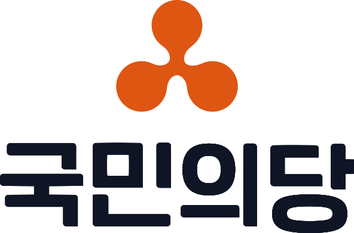
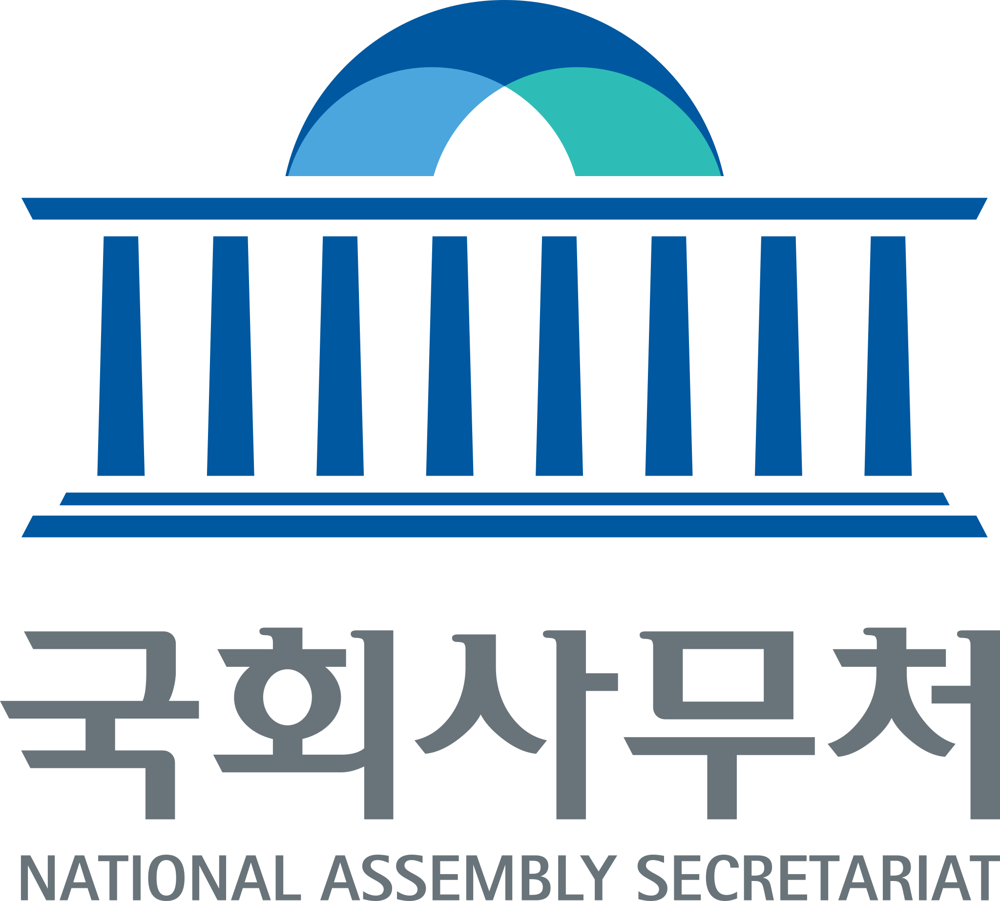

미디어 릴레이션
2016년부터 정치부 출입기자를 상대해 왔습니다. 기자에게 필요한 정보와 타이밍을 압니다.
PR MANAGER · MEDIA RELATIONS · PUBLIC AFFAIRS
주이삭
13년간 언론 대응, 위기 커뮤니케이션, 대관과 이해관계자 조율을 선거와 의회 현장에서 해 왔습니다. 이제 그 경험을 기업의 평판과 성장에 쓰려 합니다.

WHAT I BRING
정치 현장은 하루에도 몇 번씩 이슈가 터지고 모든 문장이 기사가 되는 곳입니다. 그곳에서 쌓은 감각을 기업 PR 업무에 맞춰 정리했습니다.
2016년부터 정치부 출입기자를 상대해 왔습니다. 기자에게 필요한 정보와 타이밍을 압니다.
현안이 터지면 당일 공식 입장을 냈습니다. 부정적 프레임을 조직의 가치를 설명하는 메시지로 바꾼 경험이 있습니다.
공식 논평, 브리핑, 발표문을 직접 기획하고 썼습니다. 쟁점을 짧고 정확한 문장으로 정리합니다.
8년간 지방의회에서 입법·예산·감사를 직접 했습니다. 규제와 정책이 만들어지는 과정을 안에서부터 압니다.
언론홍보팀을 세 번 꾸렸습니다. 인력을 영입하고 업무를 나눈 뒤 메시지 생산·검토·배포 과정을 설계하고 교육했습니다.
사회조사분석사 자격을 바탕으로 여론조사를 설계·분석하고 결과를 보고서와 영상 콘텐츠로 만듭니다.
WHY CORPORATE
정치 현장에서 13년간 해 온 일은 결국 조직의 메시지로 신뢰를 얻는 일이었습니다. 8년의 선출직 활동을 마무리한 지금, 그 일을 기업의 언어로 이어 가려 합니다.
언론 대응, 위기 메시지, 이해관계자 조율은 기업 PR의 주요 업무와 같습니다. 바뀌는 것은 상대하는 기자와 이해관계자입니다.
입법·예산·감사를 직접 해 본 경험으로, 정책 변화가 기업에 미칠 영향을 먼저 읽고 대응 메시지를 준비할 수 있습니다.
한 정당의 입장을 대변하던 자리에서 나와 회사의 평판과 이익을 지키는 실무자로 일하려 합니다.
CASE STUDIES
바른미래당 중앙당 부대변인
기업 PR에서는 부정 이슈·밈에 대한 리프레이밍과 브랜드 보이스 정립
국민의당 중앙당 공보실 · 총괄간사
기업 PR에서는 제품 런칭·기자간담회·대형 행사의 미디어 운영
국민의당 창준위(2020) · 개혁신당 대선 공보단(2025)
기업 PR에서는 언론홍보팀 업무에 빠르게 적응하고, 보도자료 승인 프로세스와 팀 운영을 실무에서 뒷받침
(재)개혁연구원 상근부원장
기업 PR에서는 소비자 인식 조사, 이슈 모니터링, 데이터 기반 보도자료
ABOUT ME
복잡한 사안에서 핵심 문제를 찾고 필요한 사람과 기능을 연결해 실행 가능한 결과로 만드는 일을 잘합니다.
경력
PR · 커뮤니케이션
선거·창당 시기의 공보 조직은 3~4개월 단위의 단기 캠페인으로 꾸려집니다. 2016년부터 주요 선거마다 공보 조직에 다시 합류했습니다. 2018년 이후의 대변인·공보 직책은 서대문구의원 재임 중 겸직이었습니다.
개혁신당 제21대 대통령선거 공보 조직
대변인단 메시지 생산 체계 정비, 공보 인력 충원·교육, 후보 현장 기자단 취재 지원
개혁신당 중앙당 · 제22대 총선 선대위
창당 초기 공보 조직에서 현안 공식 논평을 직접 기획·작성·배포, 복수 언론 보도에 반영
국민의힘 중앙당 (인재영입)
공개 오디션으로 선발된 대변인단의 현장 홍보와 언론 취재 지원

국민의당 2020.02 – 2020.04단기 캠페인국민의당 창당준비위원회 · 선거대책기구
실무자 2명을 직접 영입해 홍보팀 구성, 제한된 인력으로 공식 메시지 생산과 대변인단 지원 병행
바른미래당 중앙당
공식 논평과 대외 메시지 작성, '바미하다' 논평으로 부정 프레임을 조직 가치로 전환
국민의당 · 바른미래당 중앙당 사무처
출입기자 대응, 논평·브리핑 초안 작성. 2017년 대선 공보현장팀 총괄간사로 전국 기자단 운영
공공정책 · 대외협력
(재)개혁연구원 · 정책연구·여론조사·전략기획
여론조사 기획·분석, 정책 홍보전략, 뉴미디어 콘텐츠 기획, 조직 운영 자문 (2025.06 사임, 2026.08 상근으로 복귀)
개혁신당 중앙당
당 최고 의사결정기구에서 정책·운영 결정과 대외 메시지 방향 검토
서울특별시 서대문구의회
조례 46건 대표발의·42건 가결(91.3%), 예산·결산 심의, 행정사무감사, 주민·기관·단체 간 이해관계 조율

국회사무처 2015.10 – 2016.06국회사무처
국정감사·예산심의 자료 정리, 정책자료 조사, SPSS 설문 분석